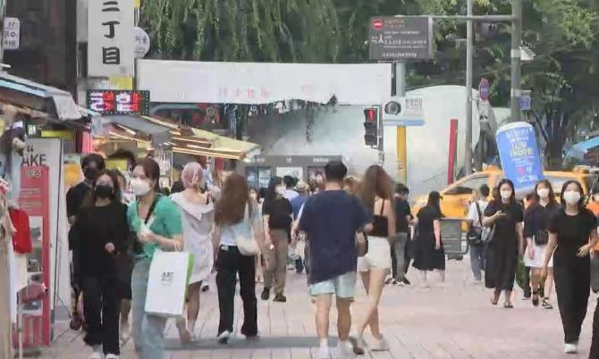

서울 마포구, 홍대 일대 2주간 특별 방역 점검
2021.07.02

서울 마포구가 오는 14일까지 홍대 일대의 식당과 카페·주점 등 업소 천200여 곳을 대상으로 특별 방역 점검을 벌입니다.
마포구는 최근 관내 음식점과 수도권 영어학원으로 이어진 집단감염 확진자들이 홍대 인근 음식점을 이용하고 다른 식당에서 추가 확진자가 다수 발생하고 있는 상황에서 이같이 조치했습니다.
마포구는 전 직원을 동원해 하루 60명의 점검반을 편성하고 오후 9시 30분부터 11시까지 홍대 일대의 음식점·주점 등에 방역 수칙 안내 홍보물을 배부하고 자발적인 준수를 계도합니다.
아울러 5인 이상 사적 모임 금지와 마스크 착용, 출입자 명부 작성 관리 등을 점검할 계획입니다.
방역수칙 위반 업소에는 과태료 150만원을 부과하고 최소 일주일간 집합금지 명령을 내리는 등 강력히 대처할 방침입니다.
서울 마포구, 홍대 일대 2주간 특별 방역 점검
2021.07.02.
서울 마포구가 오는 14일까지 홍대 일대의 식당과 카페·주점 등 업소 천200여 곳을 대상으로 특별 방역 점검을 벌입니다.
마포구는 최근 관내 음식점과 수도권 영어학원으로 이어진 집단감염 확진자들이 홍대 인근 음식점을 이용하고 다른 식당에서 추가 확진자가 다수 발생하고 있는 상황에서 이같이 조치했습니다.
마포구는 전 직원을 동원해 하루 60명의 점검반을 편성하고 오후 9시 30분부터 11시까지 홍대 일대의 음식점·주점 등에 방역 수칙 안내 홍보물을 배부하고 자발적인 준수를 계도합니다.
아울러 5인 이상 사적 모임 금지와 마스크 착용, 출입자 명부 작성 관리 등을 점검할 계획입니다.
방역수칙 위반 업소에는 과태료 150만원을 부과하고 최소 일주일간 집합금지 명령을 내리는 등 강력히 대처할 방침입니다.